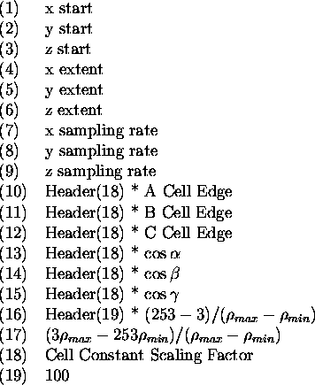
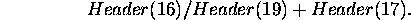

The DSN6 map format is designed to allow the rapid location of blocks (called bricks in this context) of density for display on a graphics system. The file in binary with a fairly simple structure.
It is composed of a series of records which are all 512 bytes long. The first is a header which contains all the information required to interpret the rest of the file. The subsequent bricks contain blocks of electron density. Each density sample is one byte in size. The parameters for mapping real numbers to bytes is stored in the header. The order of the samples within a brick is ``x fast, y medium, and z slow". This means that for the first value of y and z all values of x are written. Then y is incremented and all the x values for the new (y,z) pair are written.
The order of bricks within the file is the same. For the first values of y and z all the x bricks are written out in order.
The data in the header is composed of 256 integer*2 values, most of which are never used. Those which are are

Any density value is really equal to the value of the byte times

The biggest problem with DSN6 files is confusion about byte swapping differences between big and little endian computers. The bytes of the bricks present no problem but the header record does.
In the old style of DSN6 file (Frodo days) one would write the bytes in the bricks as though they were integer*2. This would cause them to be swapped in the same way as the header record and allowed the general Unix command dd, to convert the file from one byte swap to another.
In the new style (O days) the header record is written as though the computer is big endian, reguardless of its true endianisity.